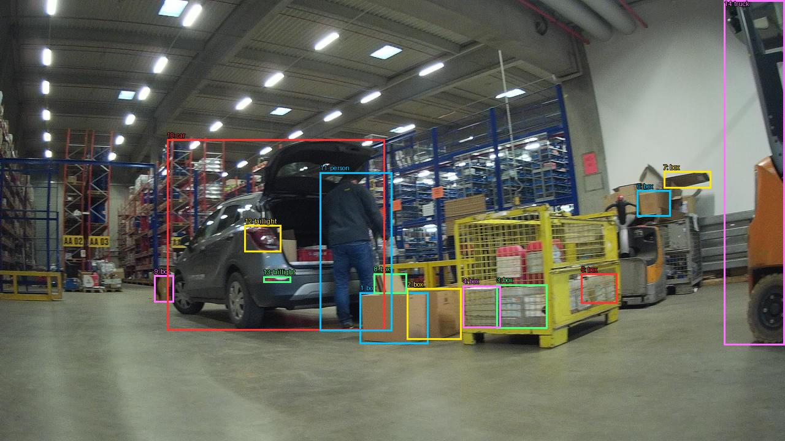

Prejšnji OD (shranjen)


Opis → phrase grounding (nov)

The image shows a large warehouse with a car parked in the center. The car is black and has its trunk open, revealing the interior of the car. A man is standing next to the car, loading boxes into a yellow pallet truck. The warehouse is filled with shelves and racks, and there is a forklift on the right side of the image. The floor is made of concrete and there are several boxes and pallets scattered around the warehouse. The ceiling is high and has multiple rows of lights.

Original · Caption raw · Grounding raw · Koordinate
Številke so lokalni ID regije. Dolge slikovne oznake so skrajšane; spodaj so celotne fraze. Napovedane regije se lahko prekrivajo ali opisujejo skupine.
| ID | Celotna fraza | bbox xyxy |
|---|---|---|
| 1 | The car | [272.0, 222.8400115966797, 638.0799560546875, 541.0800170898438] |
| 2 | trunk | [421.7599792480469, 223.5600128173828, 616.3200073242188, 407.1600036621094] |
| 3 | A man | [517.760009765625, 266.760009765625, 639.3599853515625, 543.2400512695312] |
| 4 | boxes | [584.3200073242188, 440.280029296875, 752.0, 564.8400268554688] |
| 5 | pallet truck | [736.6399536132812, 329.4000244140625, 1016.9599609375, 571.3200073242188] |
| 6 | The warehouse | [7.039999961853027, 5.400000095367432, 950.3999633789062, 471.96002197265625] |
| 7 | a forklift | [1176.9599609375, 1.8000000715255737, 1278.0799560546875, 566.280029296875] |
| 8 | a forklift | [981.1199951171875, 315.0, 1092.47998046875, 504.3600158691406] |
| 9 | The floor | [3.1999998092651367, 446.0400085449219, 1275.52001953125, 715.3200073242188] |
| 10 | several boxes | [584.3200073242188, 440.280029296875, 753.2799682617188, 564.8400268554688] |
| 11 | The ceiling | [8.319999694824219, 2.5199999809265137, 951.6799926757812, 266.0400085449219] |